Menu: Configuração (o título da tela diz "Grupo Perfil") · Situação do manual: Em ajuste · Fonte dos prints: versão nova (rodada de 18/11/2026, 18 imagens).
Para que serve
Mostra os grupos de perfil da Garantia da Qualidade e quem pertence a cada um. Existem três grupos prontos, Nível 01, Nível 02 e Nível 03; a tela permite mudar o nome do grupo e colocar ou tirar usuários dele. No sistema entregue, o nível do usuário decide o que ele pode fazer nas telas da GQ: o nível 1 mexe no que criou, o nível 2 também no que é da sua área e o nível 3 em tudo, sendo o único que aprova, libera e finaliza em várias telas (do legado; a confirmar na versão nova). É a tela que define "quem aprova" no módulo.
Antes de começar (o que precisa existir)
| O que precisa existir | Para quê | Onde se cadastra |
|---|---|---|
| Os grupos Nível 01, 02 e 03 | Não há botão Incluir; eles já existem | Instalação do sistema |
| O usuário a colocar no grupo | A busca precisa de pelo menos 3 letras do nome | Administração (cadastro de profissional e conta) |
| A função da tela no perfil | Sem ela, o botão PESQUISAR fica desabilitado | Administração > Perfil |
| A autorização da Qualidade para mudar níveis | Quem entra aqui altera quem aprova | Decisão da área (ponto para validar: quem pode mudar e com qual registro) |
Passo a passo
- Abrir a tela e pesquisar. No menu Configuração, clique em Grupo Perfil. A tela mostra o quadro "Pesquisa" com o campo Nome e os botões LIMPAR e PESQUISAR. Com o campo vazio, PESQUISAR lista os três grupos; a grade tem as colunas NOME, NÍVEL (ambas ordenáveis) e Editar.
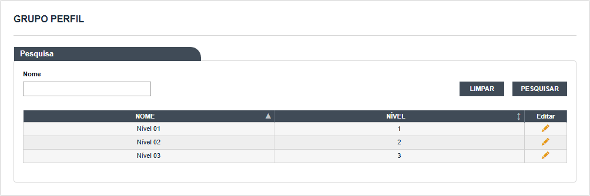
A imagem mostra Nível 01 (nível 1), Nível 02 (nível 2) e Nível 03 (nível 3), cada um com o lápis de Editar. A lista tem só três linhas e não mostra paginação (o legado listava três por página; não verificado).
- Abrir um grupo. Clique em Editar. A tela de edição traz o quadro "Dados" com Nome (editável) e Nível (travado: não dá para trocar o número); o quadro "Grupo Usuário", com "Nome Usuário (digite 3 caracteres)", o botão BUSCAR e a tabela "Código / Usuário / Remover"; e os botões VOLTAR e SALVAR.
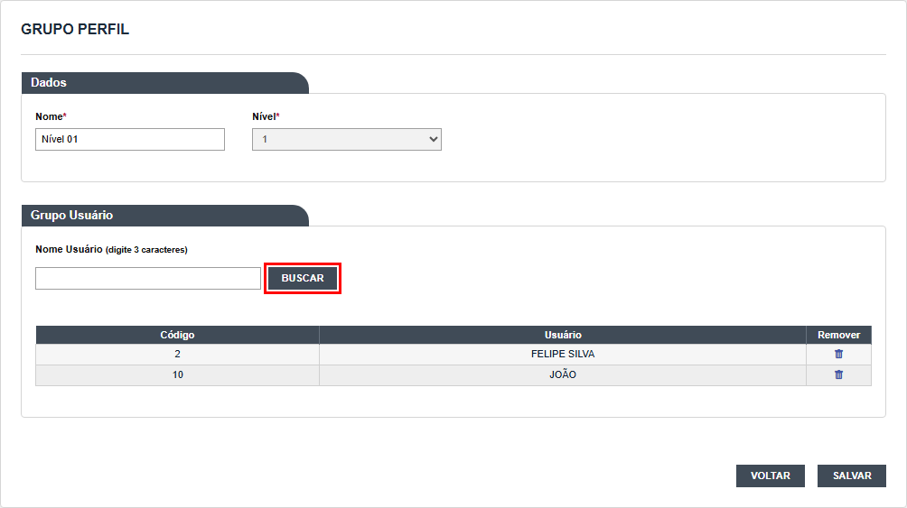
A imagem mostra o Nível 01 com dois usuários (códigos 2 e 10). Não existe botão Log nem Excluir.
- Buscar um usuário. Digite pelo menos 3 letras (por exemplo "SEM") e clique em BUSCAR. Abre a janela "Usuários", com a coluna Nome e o ícone Selecionar em cada linha. O botão FECHAR volta sem escolher.
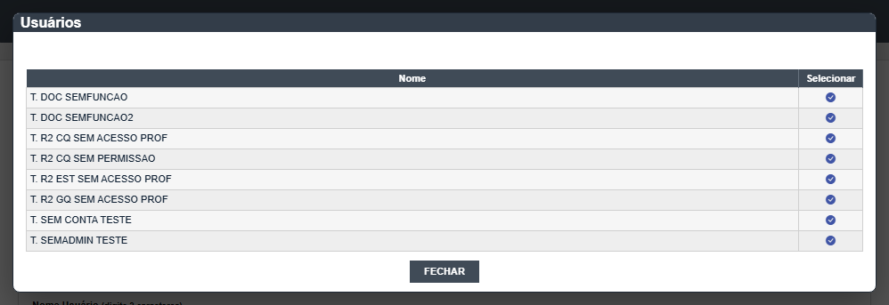
Depois de escolher, o nome entra no campo e aparece o botão ADICIONAR:
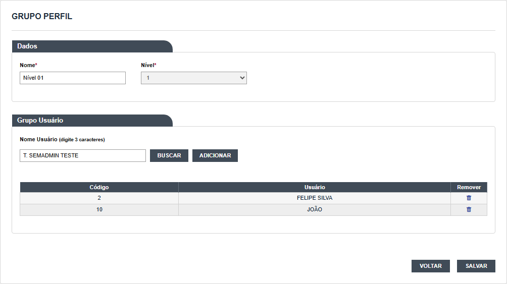
Com menos de 3 letras, a tela mostra "Nome Usuário: digite no mínimo 3 caracteres.":
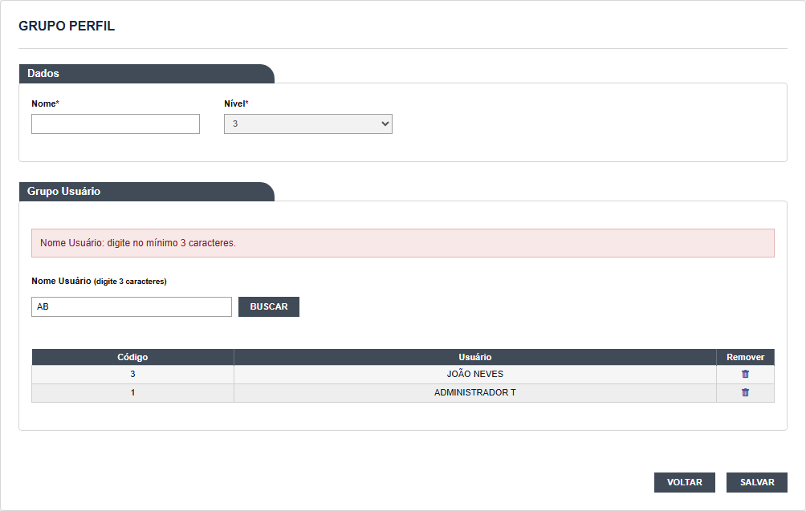
- Colocar o usuário no grupo. Clique em ADICIONAR: o usuário entra na tabela, ainda sem gravar.
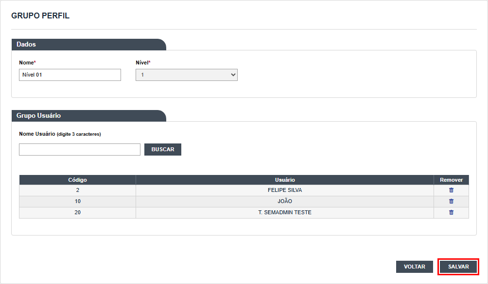
A imagem mostra o novo usuário (código 20) na tabela, com SALVAR em destaque. Se o mesmo usuário for adicionado de novo, aparece, em faixa vermelha, "Usuário já foi cadastrado.":
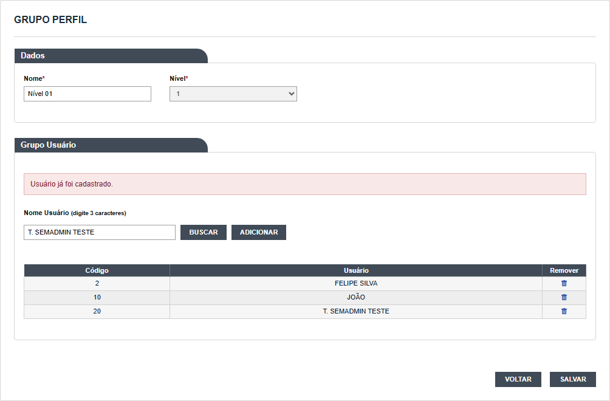
- Salvar. Clique em SALVAR. A tela pergunta "Confirma a alteração do item?" e, depois de SIM, mostra "Alteração realizada com sucesso!". Não pede justificativa: o motivo que vai para o histórico é sempre o texto fixo "Atualizar Grupo Perfil" (DV-GQ-N-011).
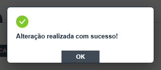
Ao reabrir o grupo, o usuário novo está gravado:
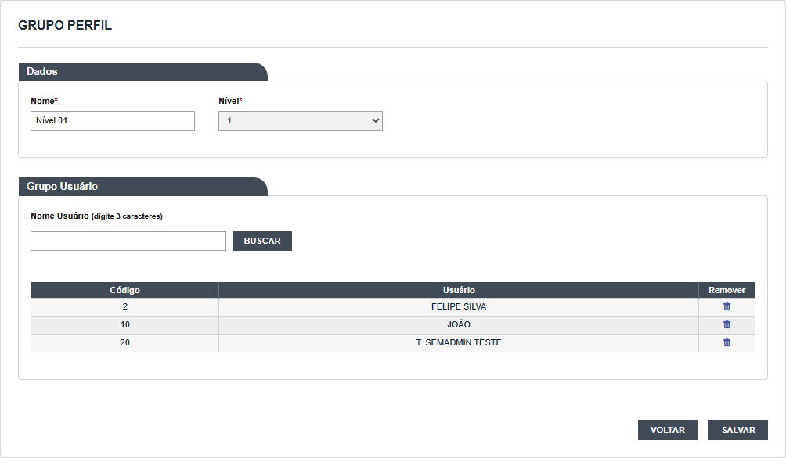
- Tirar um usuário do grupo. Use o ícone de lixeira da coluna Remover. Não há pergunta: o usuário sai da tabela e só deixa o grupo quando se clica em SALVAR.
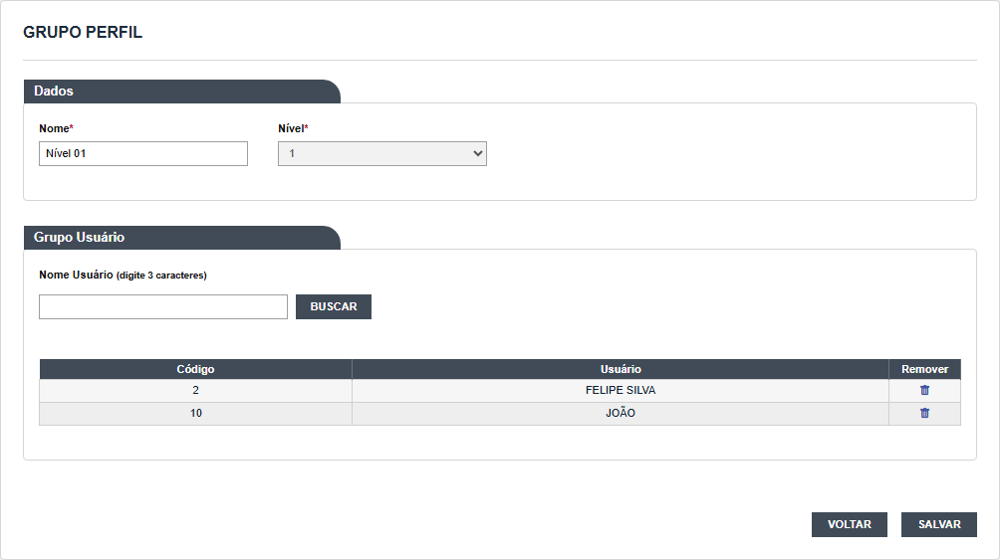
Para gravar, a mesma pergunta e o mesmo sucesso:
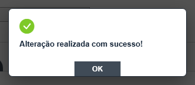
- Salvar sem mudar nada. O sistema também pergunta e grava, e responde com sucesso: o histórico ganha um registro sem mudança. A área decide se isso deve ser recusado.
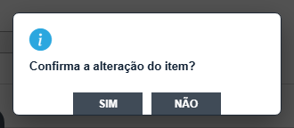
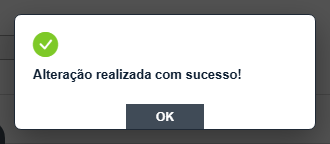
- Nome vazio. Apague o Nome e clique em SALVAR. A tela pergunta primeiro "Confirma a alteração do item?" e só depois do SIM mostra "Nome é obrigatório.".
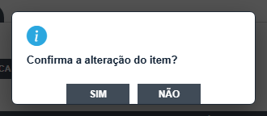
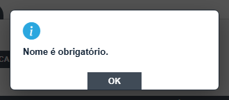
Depois do OK, o formulário continua com o Nome vazio, sem gravar:
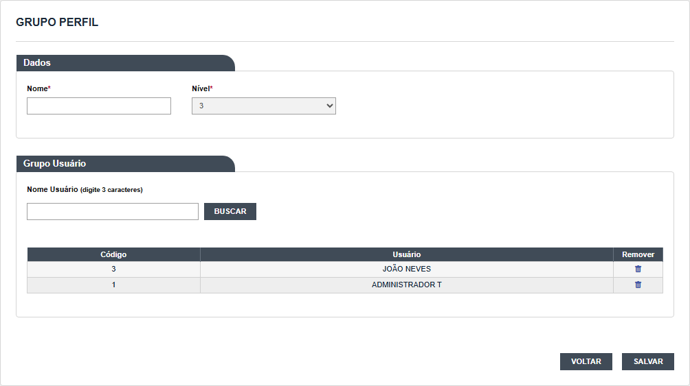
- Ver o histórico. Não existe botão Log nesta tela, embora exista a função "Consultar log" e a chamada no servidor (DV-GQ-N-012). A rodada 8 só conseguiu abrir o histórico por chamada direta ao servidor: 15 registros no Nível 01, 2 no Nível 02 e 11 no Nível 03. Não há imagem possível.
Ícones e botões da lista
| Ícone ou botão | O que faz | Quando aparece |
|---|---|---|
| Editar | Abre o grupo e seus usuários | Em cada grupo |
| PESQUISAR / LIMPAR | Lista os grupos / esvazia o filtro | Sempre (PESQUISAR desabilitado para perfis sem acesso) |
| Incluir, Excluir, Log | Não existem | Nunca |
Botões e ações
| Botão | O que faz |
|---|---|
| PESQUISAR | Lista os grupos |
| LIMPAR | Esvazia o filtro |
| Editar | Abre o grupo |
| BUSCAR | Abre a janela "Usuários" |
| Selecionar | Escolhe o usuário na janela |
| FECHAR | Fecha a janela sem escolher |
| ADICIONAR | Põe o usuário escolhido na tabela (sem gravar) |
| Remover | Tira o usuário da tabela |
| SALVAR | Pergunta e grava (sem justificativa digitada) |
| VOLTAR | Volta à lista |
Mensagens do sistema
| Mensagem | Quando aparece |
|---|---|
| A pesquisa não retornou nenhum resultado. | Lista sem linhas |
| Confirma a alteração do item? | Ao clicar em SALVAR (antes de conferir o Nome) |
| Alteração realizada com sucesso! | Grupo gravado |
| Nome é obrigatório. | Nome vazio, depois do SIM |
| Usuário já foi cadastrado. | Mesmo usuário adicionado duas vezes |
| Nome Usuário: digite no mínimo 3 caracteres. | Busca com menos de 3 letras |
| Usuário sem permissão para salvar este grupo perfil. | Perfil sem permissão tenta salvar |
| Grupo perfil não encontrado | Abrir o endereço de edição sem acesso de leitura (rodada 5) |